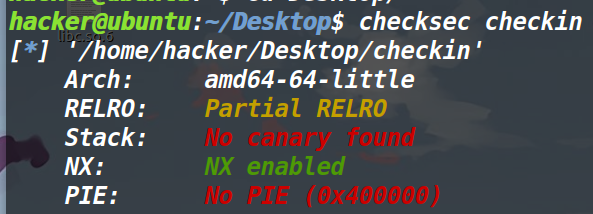
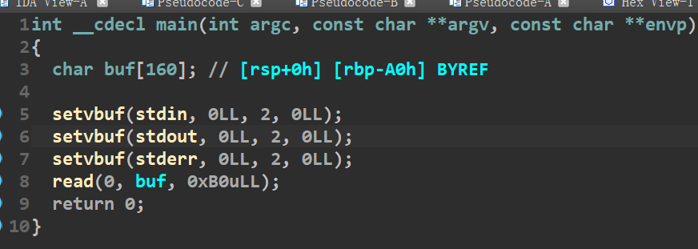
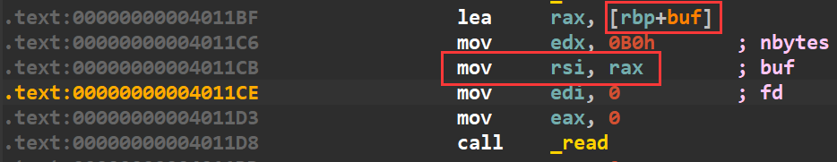
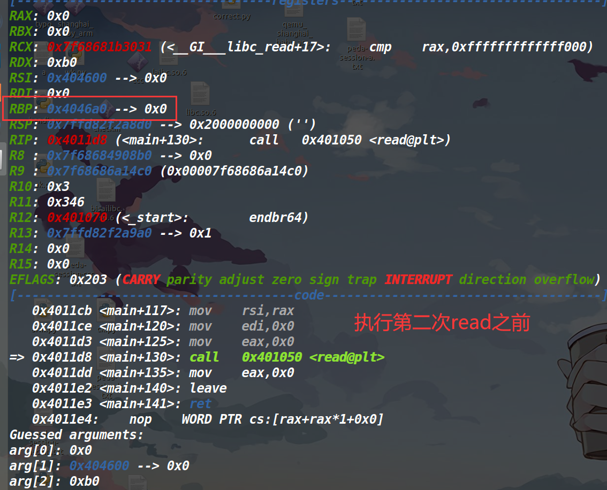
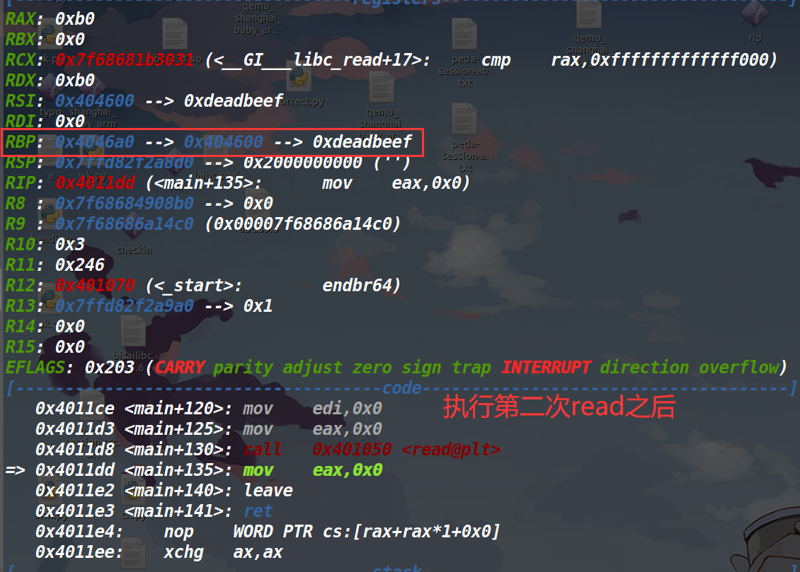
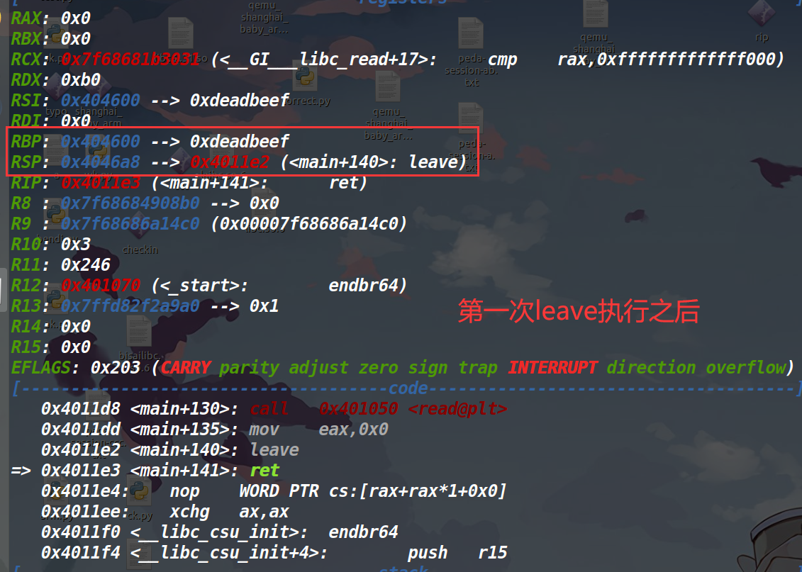
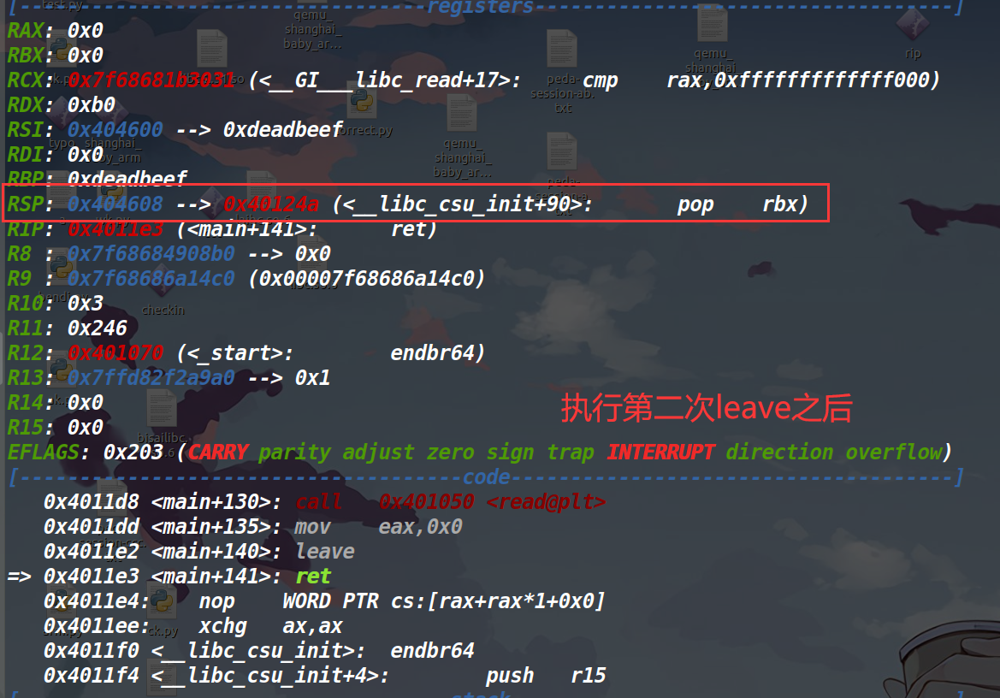

DASCTF2022_checkin
总结：
通过这道题的学习和收获有：
1、栈迁移，何为栈？本来栈的定义就是rsp指针与rbp指针之间的就是栈。rsp在哪栈就在哪，因此两次leave，栈就变了两次，而真正跳到变化的栈那步是在最后的ret执行的。也算是对栈迁移又有了一点新的理解。
2、利用magic gadget修改got表
3、这道题的核心考察的就是栈迁移以及payload布局。
4、取magic gadget中的ebx时，如果ebx的值为正，则直接取，如果为负，则加0x100000000取补码。
5、如果可以的话，迁移到bss段尽量迁移到地址高一点的地方。这次打远程的那个exp就是因为bss段迁移的太低了，因为是破坏了某些数据，导致最后执行system函数的时候卡住了。
保护策略：

大致思路：

可以发现，这道题就一个输入函数，没有输出函数，不过这个read具有16字节的溢出。这个没什么好想的，直接就栈迁移了。
然后输出函数也没有，泄露栈基地址这种情况就排除了，那就只能迁移到bss段。
先考虑一点，溢出16个字节仅仅只能去迁移，我们似乎没有办法去bss段布置数据。不过观察了一下汇编代码，发现read函数的第二个参数是由rbp确定的。

而我们可以利用溢出来控制rbp，因此就相当于可以控制read的输入的地方了，控制完rbp的话，只能在控制一个返回地址，既然控制rbp就已经相当于控制rsi了，那就返回0x4011BF再读一次（此时的read输入的地址已经是bss段了）。选取往bss段输入的内容，一定要把地址抬高，我最开始选择的是往0x404100这里写入数据再迁移，到了最后执行system的过程中给卡死了
read结束之后，又到了leave;ret指令。leave指令就是mov rsp;rbp pop rbp；
执行leave指令的时候，我们的rbp是什么？是我们要控制read函数的rsi来设定的rbp（它现在是bss段地址）
我还是用实际的数据来举例一下吧。假设我第一次控制rbp为（0x404600+0xa0），那rsi的值就是0x404600（因为buf为-0xa0）（即我们输入的数据是从0x404600处开始输入的）我们可以输入0xB0个数据，因此在0x404600+0xa0这个地方写入0x404600。
此时执行read结束后的leave指令是什么情况？（如下图）




总结一下上面的过程，原本read读入完我们的数据，rbp指向的才是我们想跳转的地方（并非rbp本身）而rbp本身距离我们想跳转的还有0xa0个字节，不过至少rbp就在bss段，执行了第一次leave之后，rsp也就变成了rbp的值（同时由于pop rbp，此时的rbp又变成了rbp当初所指向的内容），此时已经迁移到bss段了（只不过我们还要再迁移到我们布置的数据那里）因此再来一次leave（这个是第二次read输入过去的），由于leave里的mov rsp,rbp，rsp再次被改变，最后完成了迁移（迁移到了我们布置在bss段里的数据）
至此的话，大体框架就已经完成了。
剩下的就是在bss段中布局payload了，本地的话非常简单，用magic gadget去将setvbuf函数地址修改为one_gadget地址，然后调用一下setvbuf就完事了。远程的话，roderick师傅给我说，因为动态库的原因，one_gadget用不了，因此只能把setvbuf改成puts函数，然后再劫持程序执行流，完成ret2libc。
这里先简单说一下magic gadget吧，用ROPgadget --binary checkin --opcode 015dc3 去搜这个gadget的地址。015dc3是这个gadget的机器码（IDA里是看不见的，因为这个是机器码错位得到的）。
这个gadget长这样：
add DWORD PTR [rbp-0x3d], ebx |
核心是在第一行的add上，我们可以利用ret2csu控制rbp和rbx，由此就可以用这个修改函数的got表。以这道题为例，我现在想将setvbuf的真实地址改成one_gadget地址，只需要将rbp-0x3d写成setvbuf的got地址，将ebx放成setvbuf和one_gadget二者在libc库中的偏移即可。再调用这个one_gadget，即可完成修改got表。
这个magic gadget威力还是很大的，关于magic_gadget详细解释，我写在了这篇博客上 here
一句话概括本题思路，利用栈迁移到bss段，调试布置payload，利用magic gadget修改setvbuf got表为打印函数，最后ret2libc即可。
exp:
这是打本地的，用的one_gadget。
from pwn import * |
比赛结束，远程的环境关闭了，不过roderick师傅远程打通了，我按照他这个思路写的，动态库换成比赛给的2.31，然后改成remote，远程也是ok的。
#coding:utf-8 |
如果不太理解exp为什么这样写，就多调试N遍（我光调试这远程一个脚本从写到各种调试再到打通再到彻底理解，调试了73遍…)，总会有所收获的。
本人就一菜狗，如果写的有错误的地方，欢迎指正